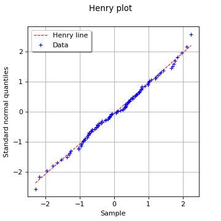

VisualTest_DrawHenryLine¶
(Source code, png, hires.png, pdf)
{kind=link}
{kind=link}

-
VisualTest_DrawHenryLine(*args)¶ Draw an Henry plot.
Refer to Graphical goodness-of-fit tests.
- Parameters
- sample2-d sequence of float
Tested (univariate) sample.
- normal_distribution
Normal, optional Tested (univariate) normal distribution.
If not given, this will build a
Normaldistribution from the given sample using theNormalFactory.
- Returns
- graph
Graph The graph object
- graph
See also
Notes
The Henry plot is a visual fitting test for the normal distribution. It opposes the sample quantiles to those of the standard normal distribution (the one with zero mean and unit variance) by plotting the following points could:
where denotes the empirical CDF of the sample and denotes the quantile function of the standard normal distribution.
If the given sample fits to the tested normal distribution (with mean
 and standard deviation
and standard deviation  ), then the points should be
close to be aligned (up to the uncertainty associated with the estimation
of the empirical probabilities) on the Henry line whose equation reads:
), then the points should be
close to be aligned (up to the uncertainty associated with the estimation
of the empirical probabilities) on the Henry line whose equation reads:The Henry plot is a special case of the more general QQ-plot.
Examples
>>> import openturns as ot >>> from openturns.viewer import View
Generate a random sample from a Normal distribution:
>>> ot.RandomGenerator.SetSeed(0) >>> distribution = ot.Normal(2.0, 0.5) >>> sample = distribution.getSample(30)
Draw an Henry plot against a given (wrong) Normal distribution:
>>> henry_graph = ot.VisualTest.DrawHenryLine(sample, distribution) >>> henry_graph.setTitle('Henry plot against given %s' % ot.Normal(3.0, 1.0)) >>> View(henry_graph).show()
Draw an Henry plot against an inferred Normal distribution:
>>> henry_graph = ot.VisualTest.DrawHenryLine(sample) >>> henry_graph.setTitle('Henry plot against inferred Normal distribution') >>> View(henry_graph).show()